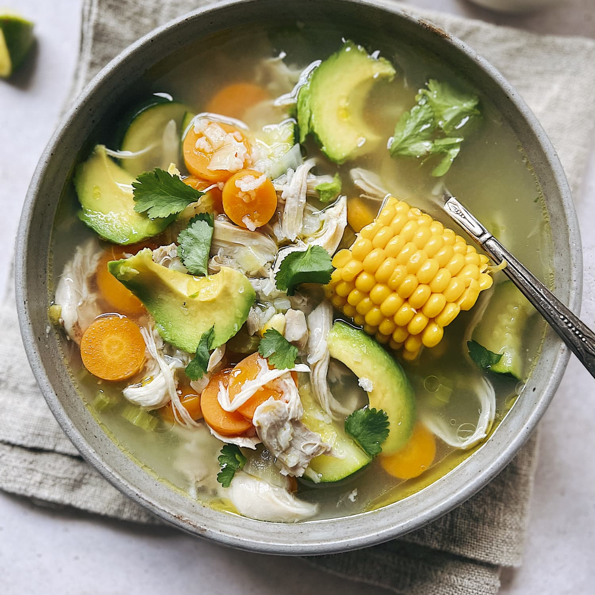

Caldo De Pollo

This caldo de pollo turned out delicious on my first attempt! I like to serve this chicken vegetable soup with warm corn tortillas and a side of Spanish rice and refried beans.
This caldo de pollo recipe is not only hearty and nutritious — it’s a bowlful of delicious comfort.
How to Make Caldo de Pollo
You'll find a detailed ingredient list and step-by-step instructions in the recipe below, but let's go over the basics:
What is Caldo de Pollo?
Caldo de pollo is a type of Mexican chicken soup. Unlike other Latin American chicken soups, it uses whole chicken pieces instead of shredded or chopped meat. It also calls for hearty vegetables like potatoes and carrots, cut into large chunks.
Ingredients
- 5 pounds chicken leg quarters
- 2 gallons water
- 2 tablespoons minced garlic
- 2 tablespoons salt
- 1 tablespoon garlic powder
- 1 cube chicken bouillon
- 4 large carrots, peeled and cut into large chunks
- 4 large potatoes, peeled and cut into large chunks
- 4 zucchini, cut into large chunks
- 1 chayote, cut into large chunks
- 1 large white onion, cut into large chunks
- ½ bunch fresh cilantro, chopped
Directions
- Gather the ingredients.
- Place chicken legs into a large stockpot; pour water over chicken. Add minced garlic, salt, and garlic powder.
- Cover and bring to a boil over high heat. Reduce to a simmer and cook until chicken meat falls off the bones, 1 to 2 hours.
- Stir in chicken bouillon cube until dissolved; add carrots, potatoes, zucchini, chayote, and white onion. Reduce heat to medium-low and simmer until carrots and potatoes are tender, 45 minutes to 1 hour.
- Stir chopped cilantro into soup. Simmer for 5 minutes.
- Serve hot and enjoy!